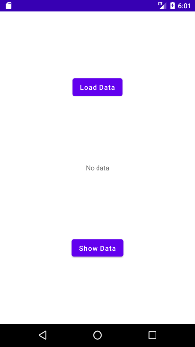
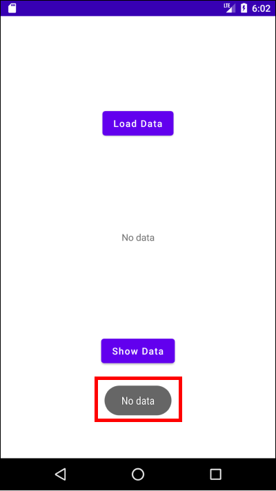
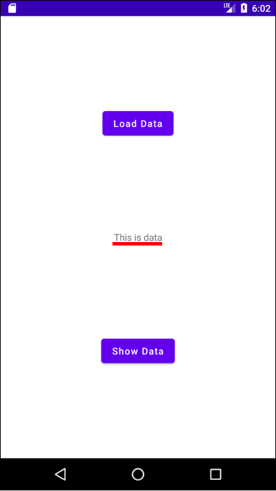
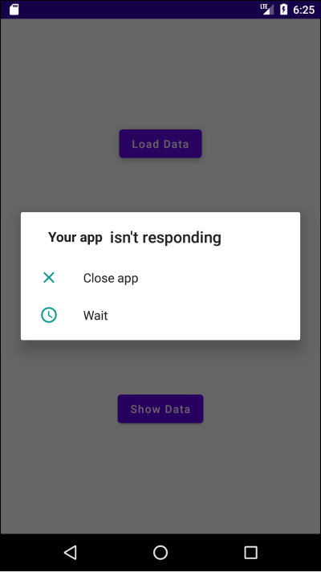

[Android] 코루틴(Coroutine) - (1) 코루틴이란?
여섯 개의 포스트에 걸쳐 코루틴(Coroutine)에 대해 알아보고있습니다.
- 코루틴이란?
- withContext()와 suspend 함수
- 스코프(Scope)의 종류
- 코루틴 생성하기 - launch(), async(), runBlocking()
- 코루틴 예외 처리
- Flow, Channel, StateFlow
코루틴
코루틴(Coroutine)을 사용하면 비동기/논블로킹 프로그래밍을 쉽게 구현할 수 있습니다. 만약 스레드와 비동기/논블로킹에 낯선 분들은 아래 포스트를 먼저 읽어볼 것을 권장합니다.
예제
우리는 다음과 같은 간단한 앱을 만들면서 코루틴에 대해 알아볼 것입니다.
Show Data버튼을 누르면 현재 데이터를 토스트 메시지에 표시합니다.
Load Data버튼을 누르면 네트워크에서 데이터를 읽어와 화면 중앙에 보여줍니다.

레이아웃은 다음과 같습니다.
- xml
1 |
|
MainActivity.kt는 다음과 같습니다.
- kotlin
1 | class MainActivity : AppCompatActivity() { |
동기/블로킹 프로그래밍의 문제점
우선 동기/블로킹 프로그래밍으로 코드를 구현해보겠습니다.
- kotlin
1 | class MainActivity : AppCompatActivity() { |
Load Data버튼을 누르면 loadData()가 호출됩니다.
1 | buttonLoadData.setOnClickListener { |
loadData()는 networkRequest()를 호출하고 반환받은 데이터를 updateUI()에 전달합니다.
1 | fun loadData() { |
updateUI()는 TextView의 값을 전달받은 데이터로 업데이트합니다.
1 | fun updateUI(text: String) { |
networkRequest()는 네트워크에서 데이터를 받아와서 반환하는 메소드입니다. 예제에서는 10초간 현재 스레드를 일시중지한 후 데이터를 반환하도록 하겠습니다. Thread.sleep(10 * 1000)는 현재 스레드를 10초 동안 정지하는 함수입니다.
1 | fun networkRequest(): String { |
앱을 실행하고 Load Data버튼을 누르면 앱 전체가 10초간 정지됩니다. 매인 스레드에서 오랜 시간이 걸리는 네트워크 작업을 수행하고 있기 때문입니다. 이 상태에서 Show Data버튼을 누르면 앱이 다운됩니다.

따라서 네트워크 통신처럼 시간이 오래 걸리는 작업은 별도의 스레드에서 비동기적으로 수행해야합니다.
비동기/논블로킹 프로그래밍 with 스레드
별도의 스레드에서 오래 걸리는 작업을 수행하도록 코드를 수정합시다. 또한 스레드에서 작업이 종료되었을 때 실행할 콜백 함수도 추가합니다.
1 | fun networkRequest(callback: (String) -> Unit) { |
loadData()도 수정합니다.
1 | fun loadData() { |
다시 한번 앱을 실행하고 Load Data버튼을 눌러봅시다.
앱이 다시 다운됩니다. 비동기적으로 데이터는 잘 가져왔으나 매인 스레드가 아닌 스레드에서 UI를 수정하고있기 때문입니다. 안드로이드에서는 오직 매인 스레드만이 UI를 수정할 수 있습니다. 매인 스레드가 아닌 스레드에서 UI를 수정하면 다음과 같은 에러가 발생하며 앱이 다운됩니다.
1 | android.view.ViewRootImpl$CalledFromWrongThreadException: Only the original thread that created a view hierarchy can touch its views. |
updateUI()를 수정합시다.
1 | fun updateUI(text: String) { |
AppCompatActivity에 정의된 runOnUiThread()를 사용하면 코드 블록을 매인 스레드에서 실행하게 됩니다.
이제 Load Data버튼을 누르면 10초 뒤에 TextView가 잘 변경됩니다. 또한 데이터를 로드하는 동안 Show Data버튼을 눌러도 토스트 메시지가 잘 표시됩니다.
비동기/논블로킹 프로그래밍 with 코루틴
이제 예제를 코루틴을 사용하여 구현해보겠습니다.
(1) 의존성
코루틴을 사용하려면 모듈 수준의 build.gradle에 의존성을 추가해야합니다.
- groovy
1 | dependencies { |
(2) Scope와 launch()
loadData(), networkRequest(), updateUI() 코드는 다음과 같습니다. 동기/블로킹 프로그래밍 예제와 동일합니다.
1 | fun loadData(): String { |
1 | fun networkRequest(): String { |
1 | fun updateUI(text: String) { |
이제 코루틴을 적용해보겠습니다.
1 | // 버튼을 클릭했을 때 |
수정된 코드에서 주목할 부분은 네 가지입니다.
첫째, Dispatcher는 작업을 적절한 스레드에 배분합니다. 코루틴에서 제공하는 Dispatcher는 세 가지가 있습니다.
Dispatchers.Default: CPU 사용량이 많은 작업에 적합한 스레드를 제공합니다. 매인 스레드에서 처리하기에는 무거운 작업을 수행할 때 사용할 수 있습니다.Dispatchers.IO: 네트워크, 디스크 등 입출력에 적합한 스레드를 제공합니다. 네트워크 통신을 하거나, 파일을 읽고 쓰는데 사용할 수 있습니다.Dispatchers.Main: 코드 블록을 매인 스레드에서 수행합니다. 안드로이드에서는 UI를 변경할 때 사용할 수 있습니다.
둘째, CoroutineScope클래스의 정의된 launch()함수를 사용하면 코루틴이 생성됩니다. 이 코루틴 블록 안에 비동기/논블로킹 프로그래밍을 구현합니다. 코드 블록은 Dispatcher가 제공하는 스레드에서 실행됩니다.
1 | val scope: CoroutineScope = CoroutineScope(Dispatchers.IO) |
셋째, CoroutineScope클래스의 인스턴스를 생성하고 있다는 점에 주목합시다.
1 | // 스코프 생성 |
코루틴은 스코프 안에서 생성됩니다. 그렇다면 왜 코루틴을 스코프 안에서 생성할까요? 스코프를 사용하면 코루틴을 쉽게 추적하고 제어할 수 있기 때문입니다. 몇 가지 사례를 살펴보겠습니다.
우선 스코프 안에서 여러 코루틴이 생성될 수도 있습니다.
1 | val scope: CoroutineScope = CoroutineScope(Dispatchers.IO) |
Thread.currentThread().name는 현재 스레드의 이름을 반환합니다. 첫 번째 코루틴과 두 번째 코루틴이 다른 스레드에서 실행된다는 점에 주목합시다.
스코프를 사용하면 스코프 안에서 실행 중인 모든 코루틴을 취소할 수도 있습니다. 예를 들어 코루틴 블록이 실행 중일 때 액티비티가 종료될 수도 있습니다. 이 경우 코루틴을 계속 수행할 필요가 없기 때문에 스코프를 사용하여 모든 코루틴을 종료할 수 있습니다. 스코프를 종료할 때는 cancel()을 호출합니다.
1 | class MainActivity : AppCompatActivity() { |
스코프를 사용하면 스코프 안에서 실행되고 있는 작업들이 아직 실행 중인지, 정상적으로 실행 후 종료되었는지, 취소되었는지도 확인할 수 있습니다.
1 | val scope: CoroutineScope = CoroutineScope(Dispatchers.IO) |
스코프를 생성할 때는 Dispatcher를 인자로 전달해야합니다. 아래 코드에서 스코프 내부의 코루틴들은 Dispatchers.IO가 제공하는 스레드에서 실행됩니다.
1 | val scope: CoroutineScope = CoroutineScope(Dispatchers.IO) |
이처럼 스코프를 사용하면 스코프 내부의 코루틴들을 추적하고 효율적으로 관리할 수 있습니다.
스코프는 생성할 수 있고, 상태를 확인할 수 있으며, 종료할 수 있습니다. 이를 스코프는 생명주기가 있다고 표현합니다. 스코프 내부의 코루틴들은 스코프의 생명주기를 따릅니다. 즉, 스코프가 종료되면 내부의 모든 자식 코루틴들도 종료됩니다.
넷째, withContext()는 코루틴에서 제공하는 함수입니다. 이 메소드는 인자로 전달한 Dispatcher가 제공하는 스레드에서 코드 블록을 실행합니다. UI를 변경하는 updateUI()메소드는 매인 스레드에서 실행되야하므로 이 함수를 사용하여 Dispatcher를 변경합니다.
1 | val scope = CoroutineScope(Dispatchers.IO) |
이제 앱을 실행해봅시다. Load Data버튼을 누르면 10초 뒤에 TextView가 잘 변경됩니다. 또한 데이터를 로드하는 동안 Show Data버튼을 눌러도 토스트 메시지가 잘 표시됩니다.